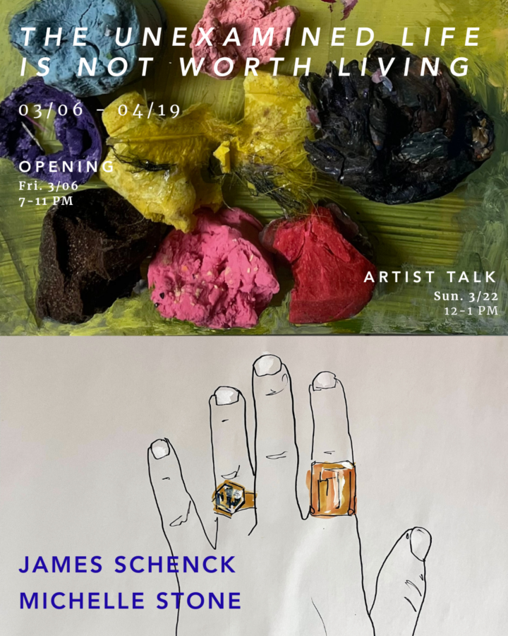

The Unexamined Life is Not Worth Living
Join us for the opening of our newest exhibition “The Unexamined Life is Not Worth Living!”
The exhibition unfolds through a soft interplay of fantasy and material inquiry, weaving together ideasof artist-as-philosopher and practice-as-self-reflection.
Schenck presents large-format drawings on newsprint, rendered with marker, gesso, and gold leaf, rooted in the language of photography and acts of preservation. His process borrows from photographic logic—exposure, development, framing—using drawing as a way to test what can be saved and what inevitably slips away. Working with fragile, impermanent materials, Schenck explores the tension between holding and losing, clarity and erosion. Drawings on tracing paper, rolled and sealed inside glass bottles, extend this inquiry: images become contained, protected, and delayed, like negatives archived or messages suspended in time. These works ask what it means to preserve an image, and whether saving something also changes it.
Stone’s work operates between archive and abstraction. Layered paint applied over photographs of her studio evokes the comfort of the familiar while opening onto dreamlike landscapes of what was, what is, and what might be. Her sculptural works ground this psychological space with corporeal weight, tracing a shared trajectory of growth, transformation, and decay that connects all living forms. today was tomorrow yesterday
Time will not leave us unscathed
Hold obscure buried secrets and treasures-
Excavating stolen dreams and transforming them yet
Frozen from too many choices and rickety definitions,